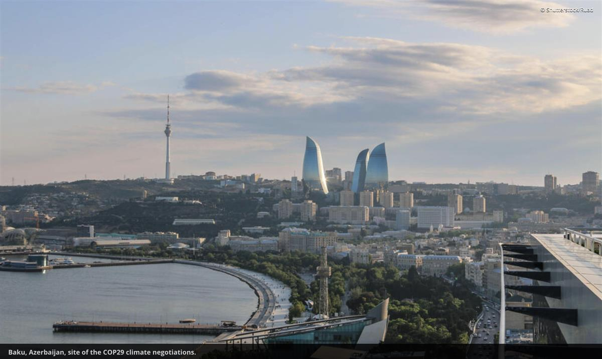

ON SOURCE: WORLD WILDLIFE FUND
- Date:November 11, 2024
- Author:Marcene Mitchell
What to expect at COP29: Connecting the dots in Baku
Azerbaijan will host the 29th UN climate negotiations, called COP29 for short. One of the key elements of this COP is finance. With all that needs doing to reach our climate goals of limiting global warming to no more than 1.5 degrees Celsius, and to protect our communities from the impacts of climate change that are already happening, an essential element is the need for capital, or funding.
A focus on funding
Tripling the renewable energy capacity in the next decade so that we can transition away from fossil fuels will require substantial capital. Ensuring resilience against climate impacts, particularly for vulnerable communities, will require substantial capital. Conserving forests, grasslands, coastal areas and seascapes that can sequester carbon and support increased biodiversity will require substantial capital. But the most important question this COP will consider is how to ensure that developing countries that are being subjected to the worst climate impacts can obtain funding to address the crisis they face.
When you start to unpack actual dollar amounts, the estimates vary depending on who you ask, but all of the numbers are large. The Climate Policy Initiative, in an assessment of the Global Landscape of Climate Financing in 2023, estimated that if one aggregated the different sources of capital and intermediaries, we’re looking at about $2.54 trillion in climate finance annually.
We know from last year’s Global Stocktake that up to $5.9 trillion is required to implement national climate plans in developing countries over the next 5 years. The 2023 UNEP Adaptation Gap Report estimates that adaptation costs in developing countries range from $215 to $387 billion per year. The International Energy Agency projects that emerging markets and developing economies (excluding China) will need about $1 trillion annually by 2030.
That capital will need to be marshaled from both public and private sources. What that means is that donor governments need to invest more in the clean energy transition of developing country economies. But those resources are too small to meet the needs of the transition and the private sector is increasingly needed to provide finance to deploy renewable energy and green transport at scale. One of the big agenda items for COP29 will be setting a new finance goal, which will help ensure that developing countries that are more vulnerable to climate impacts can receive adequate financing to address the challenges they are facing. Look for important discussions around carbon markets and how private capital may be mobilized in ways that maximize emissions reductions, prioritize equity for marginalized and overburdened communities, and ensure that carbon markets are advancing climate goals in a material way and with integrity.
Stronger national climate plans
We’re also going to see a lot of conversation around national plans for emissions reductions. Countries will be required in early 2025 to submit a new round of Nationally Determined Contributions, or NDCs, for 2035 that are more ambitious than the last round. In advance of COP29, the UN environmental agency released its Emissions Gap Report, which made it very clear that unless we can reduce emissions beyond what is currently pledged in existing NDCs, we will not be able to limit global warming to 1.5 degrees.
All is not lost, however. The report also indicated that we do in fact have the technologies and capability to bridge the emissions gap by 2030 and 2035 using existing solutions. To actually do this would require a massive mobilization of solar and wind technologies, as well as a robust commitment to nature-based solutions. Other important solutions include reducing energy demand, improving efficiency, electrification, and fuel switching in the buildings, transport and industrial sectors.
Parties to the Paris Agreement will be asked to submit a new set of NDCs by February 2025. Ensuring that countries are applying inclusive processes and arriving at NDCs that will be effective and sufficient to meet Paris goals is something WWF and other observers will be pushing for.
Seeing the big picture
This year, COP29 is sandwiched between the global biodiversity negotiations and global plastic pollution negotiations. A livable future for our planet requires us to make connections between different problems. If we are going to meet the goal of halting and reversing nature loss, then we simply must do something about climate change. We’re also not going to be able to fully meet the challenge posed by the climate crisis without mobilizing nature as a partner and ally in the fight, including protecting tropical forests and other carbon sinks. And with plastics flooding our oceans and our communities—and becoming an increasing source of greenhouse emissions through their production—we need to stem the tide of plastic pollution and move the world toward a circular economy or we will still fall short of our sustainability goals. It's all connected.
Our recent Living Planet Reportdocuments how climate change and other issues have severely impacted species loss worldwide. And it is also true that without the support of nature, the climate crisis becomes much worse much faster. The Sixth Assessment Report of the IPCC recommended that 30% to 50% of Earth’s land, freshwater, and ocean be protected. Nature as an important consideration in fighting the climate crisis was recognized at COP26 and COP27. Last year at COP, the Global Stocktake recognized the need for conserving and restoring nature. Will this be the year that the UNFCCC finally recognizes in a cover decision that nature and climate need their own active workstream that focuses on leveraging the synergies between the climate and biodiversity treaties?
This could be the year when the world finally sees the interconnection between the impact on our atmosphere and other critical ecosystems. Highlighting the commonality of these issues might push us to the realization that we need to change our relationship with our planet before it becomes too late. The Emissions Gap Report, The Living Planet Report and the draft Global Plastics Treaty all clearly indicate that time is running out. Without robust commitments and decisive action on all fronts, we will be facing a much more difficult set of choices in the near future. That makes each of these conferences a critical moment that the world needs to pay attention to. In Baku, WWF will be there not only advocating for climate action, but fighting to preserve our natural habitats, and calling for a halt to plastic pollution. Perhaps by connecting the dots, we can move faster and farther on all these issues threatening our planet. Stay tuned.

ON SOURCE: WORLD WILDLIFE FUND